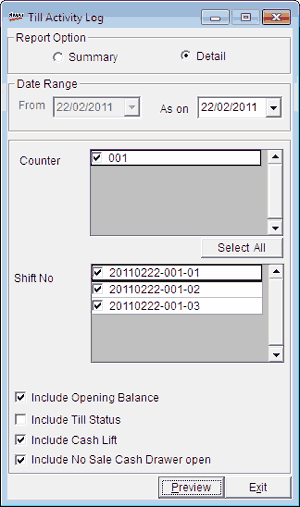

The Till Activity Log gives the details of shift-wise Till activities carried out across the Tills (Counters).

Report Option: Select Summary or Detail, to view the report accordingly. The detailed report can be prepared only for any selected date.
Date Range: By default, the From and To are the current Shoper date. You can enter any date range but the To date cannot be greater than the Shoper date.
Counter: Select the required terminal IDs.
Select All: Click to select all the terminal IDs.
Shift No: Select the required Shift IDs. By default, all the Shift IDs of the selected Counters are checked. You can unselect the Shift IDs that are not required.